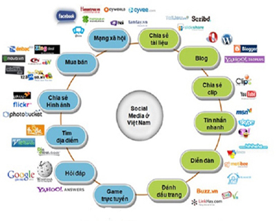

Trang chủ
Trang chủ Góc chia sẻ
Góc chia sẻ Những điểm sáng của mạng xã hội
- Kết nối bạn bè, giới thiệu bản thân mình với mọi người - Tiếp nhận thông tin, học hỏi kiến thức và kỹ năng - Kinh doanh online - Bày tỏ quan niệm cá nhân - Mang đến lợi ích về sức khoẻ, gọi video mà không tốn phí |
Mạng xã hội dù có những điểm chưa tốt, nhưng nếu bạn biết sử dụng mạng xã hội đúng cách bạn sẽ có được rất nhiều lợi ích mà mạng xã hội cũng mang đến cho rất nhiều lĩnh vực, ngành nghề, công việc…
1. Giới thiệu bản thân mình với mọi người
Chúng ta có thể giới thiệu tính cách, sở thích, quan điểm của bản thân trên mạng xã hội và nó có thể giúp chúng ta tìm kiếm những cơ hội phát triển khả năng của bản thân. |
2. Kết nối bạn bè
Chúng ta có thể biết được nhiều thông tin về bạn bè hoặc người thân bằng cách kết bạn trên mạng xã hội. Chúng ta cũng có thể gặp gỡ và giao lưu kết bạn với tất cả mọi người trên thế giới có cùng sở thích hay quan điểm giống mình. Từ đó có thể xây dựng mối quan hệ tốt đẹp hơn hoặc hợp tác với nhau về nhiều mặt. |
3. Tiếp nhận thông tin, học hỏi kiến thức và kỹ năng
Việc cập nhật thông tin trong một xã hội hiện đại như hiện nay là điều nên làm và cần phải làm, nó giúp chúng ta dễ dàng tìm hiểu, nắm bắt được nhiều thông tin quan trọng. Học hỏi thêm rất nhiều kiến thức, trau dồi những kĩ năng giúp cho bạn hoàn thiện bản thân mình hơn nữa. 4. Kinh doanh Online
Bán và mua hàng online không còn xa lạ với tất cả chúng ta vì thế mạng xã hội là một môi trường kinh doanh vô cùng lí tưởng. Bạn cũng có thể dùng nó để quảng cáo cho những sản phẩm của công ty, giúp cho bạn có thể tìm kiếm được những khách hàng tiềm năng. |
 |
| 5. Có thể gọi bằng video mà không tốn phí
|
6. Bày tỏ quan niệm cá nhân
Trải qua rất nhiều hoạt động căng thẳng trong cuộc sống, mỗi con người cần bày tỏ và cần nhận được sự sẻ chia để chúng ta cảm thấy thanh thản hơn. Thế nhưng việc chia sẻ vấn đề của mình ngoài đời thực đôi khi trở nên khó khăn với một số người ít nói. Chính vì thế việc viết ra những suy nghĩ của mình qua bàn phím máy tính sẽ giúp chúng ta giải tỏa được phần nào 7. Mang đến lợi ích về sức khoẻ
Giúp cải thiện não bộ và làm chậm quá trình lão hoá. Càng sử dụng và tìm kiếm nhiều thông tin với internet, não bộ sẽ càng được rèn luyện tốt hơn và các khả năng phán đoán, quyết định cũng sẽ từ đó phát triển thêm. Việc sử dụng internet nhiều có thể giúp cho não bộ hoạt động tốt hơn, giúp làm giảm quá trình lão hóa và làm cho người lớn tuổi vẫn có suy nghĩ hết sức lạc quan. |